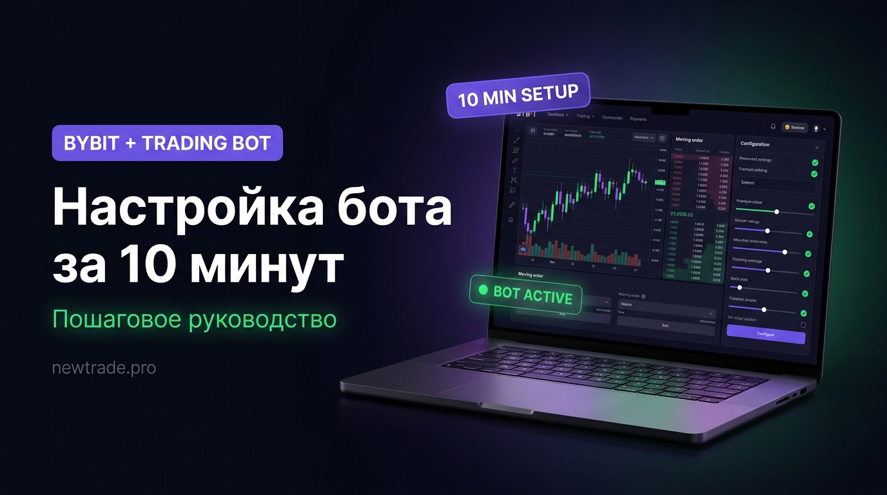

Автоматическая торговля на Bybit: настройка торгового бота за 10 минут

«Настроить бота сложно» — один из главных мифов, который удерживает трейдеров от автоматизации. На деле базовую конфигурацию торгового робота на Bybit можно сделать за 10–15 минут при наличии готовой стратегии. Именно этому посвящена данная статья.
Пройдём весь путь: от создания API-ключа до первой автоматической сделки. Пошагово, без лишней теории — только то, что реально нужно для старта.
Что понадобится перед началом
- Аккаунт на Bybit (верифицированный, KYC пройден)
- Пополненный баланс на торговом счёте (минимум $100–200 для старта)
- Готовая торговая стратегия с чёткими правилами входа и выхода
- Торговый бот или программа, поддерживающая API Bybit
Что такое API и почему без него не обойтись
API (Application Programming Interface) — это защищённый канал связи между биржей и внешней программой. Когда вы создаёте API-ключ, вы выдаёте боту разрешение торговать от вашего имени — но строго в рамках заданных прав. Робот может открывать и закрывать позиции, но не может вывести ваши деньги.
API-ключ состоит из двух частей:
- API Key — публичный идентификатор (как логин)
- API Secret — секретный ключ (как пароль). Показывается только один раз при создании — сохраните сразу
При создании API-ключа ВСЕГДА отключайте разрешение на вывод средств. Включайте только «Чтение» и «Торговля». Даже если ключ попадёт к злоумышленнику — деньги останутся на счёте. Также привяжите ключ к IP-адресу вашего сервера или компьютера.
Пошаговая настройка: от нуля до первой сделки
Шаг 1. Создайте API-ключ на Bybit
Войдите в личный кабинет Bybit и перейдите в раздел «Профиль» → «API-менеджмент». Нажмите «Создать новый ключ». Выберите тип: «Ключ для стороннего приложения». Задайте название (например, «MyTradingBot»).
- В разделе прав выберите: Чтение, Торговля деривативами / спотом. Вывод средств — ОБЯЗАТЕЛЬНО отключить.
- Если бот работает на VPS — укажите IP-адрес сервера для ограничения доступа.
- Нажмите «Подтвердить». Введите код из приложения 2FA.
- ВАЖНО: скопируйте и сохраните API Secret в надёжном месте — он показывается только один раз.
Используйте менеджер паролей (Bitwarden, 1Password) для хранения API-ключей. Никогда не храните их в мессенджерах или заметках на телефоне.
Шаг 2. Подключите бота к Bybit
Откройте интерфейс вашего торгового бота (newtrade.pro или другой совместимый инструмент). Найдите раздел «Подключение биржи» или «Exchange Settings». Выберите биржу: Bybit. Вставьте API Key и API Secret в соответствующие поля. Выберите тип аккаунта: Spot (спот) или Derivatives (деривативы/фьючерсы). Нажмите «Проверить подключение» или «Test Connection». Если появился статус «Connected» с отображением баланса — подключение успешно.
Никогда не вводите API-ключи на незнакомых сайтах. Проверяйте URL — фишинговые сайты копируют интерфейс популярных платформ.
Шаг 3. Выберите торговую пару и таймфрейм
Для старта выбирайте пары с высокой ликвидностью: BTC/USDT или ETH/USDT. Высокая ликвидность = минимальное проскальзывание = бот получает цену, близкую к расчётной. Таймфрейм для начинающих: 4H. Меньше сигналов, но выше их качество. Избегайте малоликвидных альткоинов на старте — широкий спред и непредсказуемые движения сведут на нет прибыль от стратегии.
Протестируйте стратегию сначала на BTC/USDT — это самый предсказуемый и ликвидный актив на Bybit.
Шаг 4. Настройте параметры стратегии
- Укажите условия входа в позицию согласно вашей стратегии (например: RSI < 32 и пересечение MACD)
- Задайте направление торговли: только лонг, только шорт, или оба направления
- Настройте условия выхода: стоп-лосс, тейк-профит, трейлинг-стоп
- Укажите размер позиции: в % от депозита или в фиксированной сумме USDT
- Задайте максимальное количество одновременных открытых сделок
- При торговле фьючерсами — установите кредитное плечо (рекомендуется 1x–3x для старта)
Начните с 1–2% от депозита на сделку. Это позволит пережить серию из 10+ убыточных сделок без критической просадки.
Шаг 5. Запустите тест на исторических данных (бэктест)
Перед запуском на реальные деньги — проверьте стратегию на истории. Минимальный период для теста: 6–12 месяцев, охватывающих разные рыночные условия.
Смотрите не только на итоговую доходность, но и на: максимальную просадку (Drawdown), процент прибыльных сделок (Winrate), среднее соотношение прибыль/убыток (RR), количество сделок (чем больше — тем надёжнее статистика).
Хороший результат: winrate 45–55% при RR 1:2 и просадке не более 20–25%.
Бэктест не гарантирует будущей прибыли, но позволяет отсечь заведомо убыточные стратегии до потери реальных денег.
Шаг 6. Запустите бота в режиме Paper Trading
Многие платформы поддерживают Paper Trading — торговлю с виртуальными деньгами на реальных ценах. Запустите бота в этом режиме на 2–4 недели. Убедитесь, что бот исполняет сделки именно так, как ожидалось: в правильные моменты, с правильными объёмами. Сравните результаты Paper Trading с бэктестом — если сильно расходятся, ищите причину.
Paper Trading выявляет технические проблемы до того, как они стоят реальных денег.
Шаг 7. Запустите на реальном счёте с минимальным капиталом
Начните с суммы, потерю которой вы психологически готовы принять. Первый месяц — наблюдение: не вмешивайтесь в работу бота, если он действует по заданным правилам. Ведите журнал: фиксируйте каждую сделку, анализируйте отклонения от ожидаемого поведения. Только после 30–50 реальных сделок можно делать первые выводы об эффективности стратегии. Если всё работает стабильно 2–3 месяца — постепенно увеличивайте капитал.
Не увеличивайте капитал после первой же удачной недели. Дайте стратегии пройти через разные рыночные фазы.
Рекомендуемые настройки для начинающих: шпаргалка
| Параметр | Рекомендуемое значение | Почему |
|---|---|---|
| Торговая пара | BTC/USDT (начинающим), ETH/USDT | Высокая ликвидность, меньше проскальзывание |
| Таймфрейм | 4H (оптимально для старта) | Меньше шума, чем на 1H и ниже |
| Размер позиции | 1–3% от депозита на сделку | Защита от просадки при серии убытков |
| Кредитное плечо | 1x–3x (максимум 5x для крипто) | Выше 10x — риск ликвидации резко растёт |
| Стоп-лосс | 1.5–2 × ATR от точки входа | Обязателен. Торговля без стопа = рулетка |
| Тейк-профит | 2–3 × стоп-лосс (RR 1:2 – 1:3) | Минимум 1:2, иначе стратегия не окупается |
| Макс. открытых сделок | 1–3 одновременно (для старта) | Больше позиций = больше нагрузка на депозит |
| Время торговли | Избегать 00:00–06:00 UTC | Низкая ликвидность, высокое проскальзывание |
Типичные ошибки при первом запуске бота
| Частая ошибка | Как правильно |
|---|---|
| Запуск без бэктеста, «просто попробовать» | Сначала тест на истории, потом Paper Trading, потом реал |
| Торговля с плечом 10x–20x «для разгона» | Максимум 3x–5x на крипто. Плечо усиливает убытки так же, как прибыль |
| Отключение бота после 2–3 убыточных сделок | Оценка только по выборке 50+ сделок. Убытки — часть системы |
| Запуск сразу на весь депозит | Старт с 10–20% капитала. Остальное — в резерве |
| Ручное вмешательство в открытые позиции | Либо доверяешь стратегии — либо нет. Частичное вмешательство ломает статистику |
| Игнорирование комиссий в расчётах | Учитывай комиссию Bybit (0.055% maker / 0.075% taker) при оценке прибыльности |
Мониторинг после запуска: что проверять и как часто
Автоматическая торговля не означает «включил и забыл». Даже хорошо настроенный робот требует регулярного контроля — особенно в первые месяцы работы.
Ежедневно (5 минут)
- Проверить, что бот запущен и подключён к бирже
- Посмотреть открытые позиции: нет ли зависших ордеров
- Убедиться, что баланс соответствует ожидаемому
Еженедельно (20–30 минут)
- Анализ всех сделок за неделю: winrate, средний RR, общий PnL
- Сравнение с ожидаемыми показателями стратегии
- Проверка логов на наличие ошибок исполнения
- Оценка рыночных условий: изменился ли характер рынка?
Ежемесячно (1–2 часа)
- Полный отчёт по стратегии за месяц
- Сравнение с бэктестом: реальность vs ожидания
- Решение: оставить настройки, скорректировать или остановить
- При необходимости — переоптимизация параметров на свежих данных
Торговый робот — это бизнес-инструмент. Как любой бизнес, он требует внимания, анализа и готовности адаптироваться. Те, кто относится к нему серьёзно, получают стабильный результат. Те, кто ищет «кнопку включить» — разочаровываются.
Чеклист перед запуском: сохраните и проверьте
- API-ключ создан с правами «Только торговля», вывод отключён
- API Secret сохранён в надёжном месте
- Бот успешно подключён к Bybit (статус Connected)
- Торговая пара выбрана с высокой ликвидностью
- Стратегия протестирована на истории минимум 6 месяцев
- Бэктест показал приемлемые просадку и winrate
- Проведён Paper Trading минимум 2 недели
- Размер позиции не превышает 2–3% депозита
- Стоп-лосс установлен в каждой сделке
- Журнал сделок настроен или создан вручную
- Сумма запуска — только та, которую готов потерять
Вывод
Настройка торгового бота на Bybit — это не ракетная наука. Сам процесс занимает 10–15 минут. Сложность — в том, что стоит за ним: продуманная стратегия, грамотный бэктест, дисциплина при мониторинге.
Именно поэтому большинство успешных алго-трейдеров используют готовые, проверенные решения, а не пишут роботов с нуля. Когда стратегия уже протестирована тысячами сделок и настроена под текущий рынок — остаётся только подключить и следить.
Готовый бот для Bybit — без настройки с нуля
Торговый робот newtrade.pro уже содержит проверенную стратегию, оптимальные параметры и подробную инструкцию по подключению к Bybit. Запуск — за один вечер.
Подключить бота на newtrade.pro →